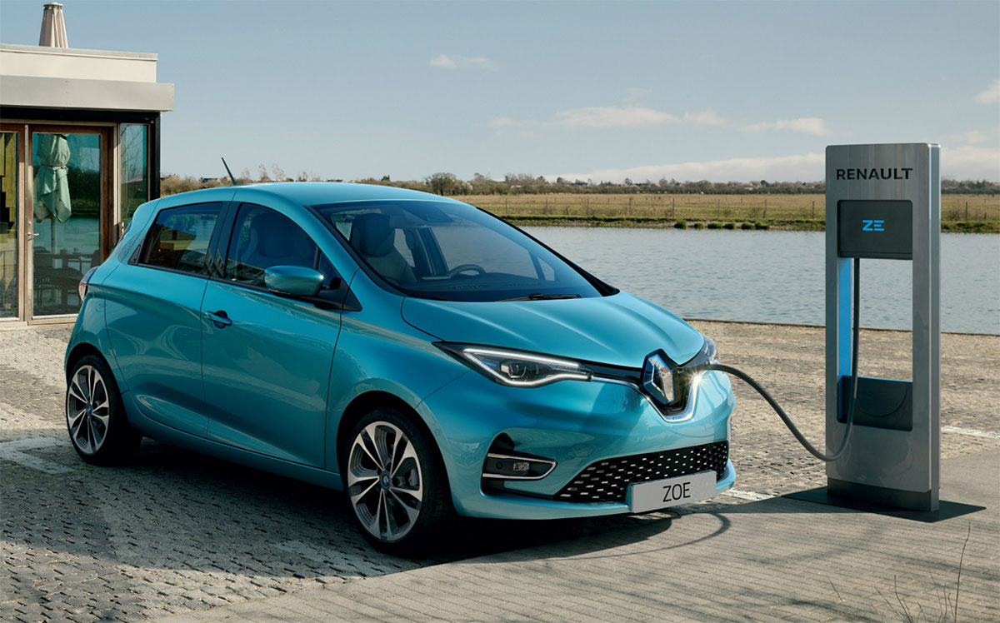
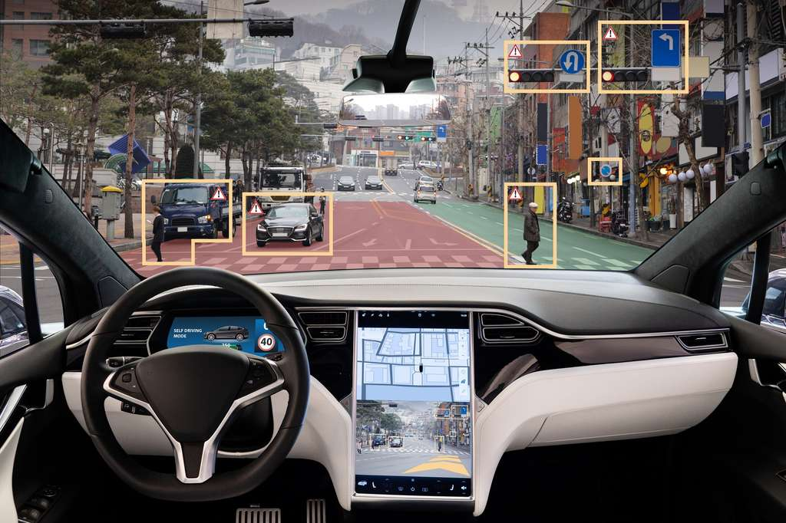

Longtemps réservés aux livres et films de sciences-fiction, les véhicules électriques et autonomes font désormais pleinement partie de notre société. Pourtant, leur arrivée sur le marché peine à se faire une réelle place. Alors, les véhicules électriques et autonomes sont-il vraiment les véhicules de demain ? Interview en fin d'article avec Salim Hima, enseignant-chercheur et Responsable de la Majeure Véhicules électriques & autonomes à l’école d’ingénieurs ESME Sudria . .
Véhicules autonomes : une révolution bien réelle mais chère
Amorcé depuis 2015, le virage des véhicules autonomes prend de plus en plus d’importance au fur et à mesure que les années passent. D’après un rapport du cabinet de conseil Oliver Wyman intitulé « Autonomie : une révolution en marche », le marché des véhicules autonomes terrestres devraient atteindre les 460 milliards d’euros en 2030, contre 5 milliards d’euros en 2018.
Mais pour pouvoir réussir cette révolution, de nombreux investissements doivent être faits, que ce soit au niveau des marchés, des compétences, des infrastructures mais aussi des constructeurs automobiles. La production et l’achat de ces véhicules restent en effet très élevés, ce qui rend actuellement ces véhicules moins attractifs malgré leurs ambitions environnementales. D’après un rapport du cabinet Gartner, le coût d’un véhicule autonome se situe entre 270 000 et 360 000 euros. Le seul système LiDAR, système de télédétection par lasers, peut s’élever jusqu’à 68 000 euros par véhicule d’après ce même rapport. Actuellement, les prix des véhicules électriques sur le marché sont compris entre 30 000 euros pour les modèles les moins chers jusqu’à 70 000 euros voire plus pour certains modèles Tesla. Des tarifs qui sont loin d’être grand public, même avec des aides gouvernementales.

Comme pour toutes nouvelles technologies, comme ce fut le cas pour les smartphones qui servent à bien d’autres choses que de simplement téléphoner, les voitures autonomes seront vite détournées de leur usage initial qu’est la simple mobilité. Dans une utilisation privée, on peut penser que la voiture autonome sera utilisée pour se divertir en famille, regarder le paysage défiler, jouer en ligne… La voiture pourra proposer des restaurants ou sites touristiques à proximité du trajet défini ou encore prévenir du trafic en temps réel. Pour un usage professionnel, les futurs véhicules autonomes pourraient vite devenir un deuxième bureau, avec la possibilité de travailler sur ordinateur ou encore faire des réunions en visioconférence.
Les voitures ne sont pas les seules concernées pour devenir électriques et autonomes, loin de là. De multiples exemples dans le monde sont actuellement en test ou en utilisation :
Navette Navya : Le 22 juin, l’entreprise a inauguré un partenariat avec Keolis au Centre national de tir sportif de Châteauroux grâce à son modèle Autonom Shuttle Evo, qui fonctionne sans aucun chauffeur de sécurité à bord. Une grande première pour un véhicule de niveau 4 sur l’échelle des véhicules autonomes. De quoi donner de grands espoirs pour de prochains transports en commun entièrement robotisés sur route.
Les camions autonomes sont aussi une réalité : aux Etats-Unis, un camion autonome L4 de la société Plus.AI a réalisé 4500 km entre la Californie et la Pennsylvanie en totale autonomie sur les routes américaines. Scania, Volvo ou encore Mercedes-Benz ont eux aussi développé leur modèle de camion autonome.
Les avions ne sont pas en reste avec notamment Airbus et son projet ATTOL, qui en juin dernier est parvenu à faire atterrir un avion sans intervention humaine, après avoir réussi des décollages autonomes en janvier avec un A350-1000.
Drones, trains, ou encore bateaux sont aussi positionnés sur le marché des véhicules autonomes avec de nombreux projets en phase de test ou déjà en exercice.